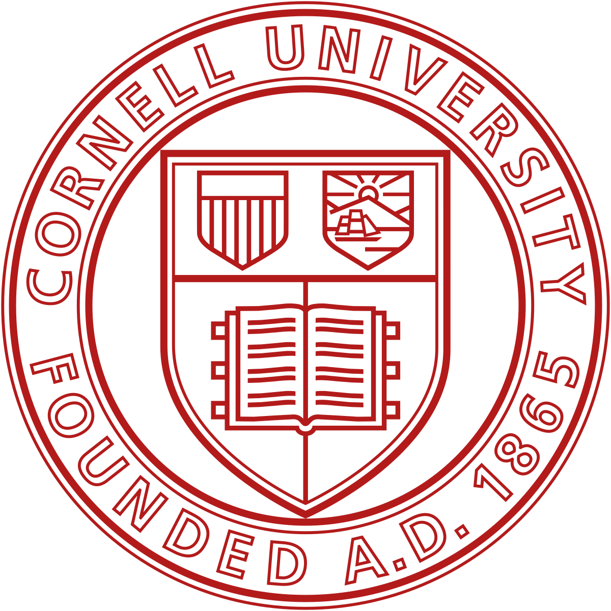

|
Bradon Thymes I am a third-year Computer Science PhD student at Cornell University, advised by Professor Bharath Hariharan. Previously, I received my B.S. in Computer Science from Howard University, where I graduated Magna Cum Laude. My research interests are in the areas of computer vision, video understanding, and multimodal learning. The primary focus of my research is on advancing long-form video understanding to analyze complex interactions using audio, visual, and textual data. I am fortunate to be supported by the Bowers CIS Dean’s Excellence/Hopper-Dean Fellowship, as well as the GEM Fellowship. I am looking for research internships for Summer 2025! If you have any open positions, please take a look at my CV. |

|
Selected Publications |

|
Ranking with Slot Constraints
Wentao Guo, Andrew Wang, Bradon Thymes, Thorsten Joachims KDD, 2024arXiv Developed methodologies to optimize ranking systems under slot constraints, ensuring fairness and efficiency in resource allocation. |
|
|
Augmenting Holistic Review in University Admission using Natural Language Processing for Essays and Recommendation Letters
Jinsook Lee, Bradon Thymes, Joyce Zhou, Thorsten Joachims, Rene F Kizilcec AIED, 2023 arXiv Leveraged NLP techniques to analyze student essays and recommendation letters for university admissions. |

|
Team3 challenge: Tasks for multi-human and multi-robot collaboration with voice and gestures
Michael J. Munje, Lylybell K. Teran, Bradon Thymes, Joseph P Salisbury HRI, 2023 ACM Paper Developed systems for multi-human and multi-robot collaboration in task execution using voice and gestures. |

|
Evoking Stress Reactivity in a Virtual Dance Competition
Lotte van Dammen, Neil Barnett, Roselynn Conrady, Lucas Wright, Bradon Thymes, Elizabeth A Shirtcliff AHFE, 2020 NSF Paper Explored stress response in virtual reality using physiological and behavioral data. |
|
|
Comparing Human and Machine Bias in Face Recognition
Samuel Dooley, Ryan Downing, George Wei, Nathan Shankar, Bradon Thymes, Gudrun Thorkelsdottir, Tiye Kurtz-Miott, Rachel Mattson, Olufemi Obiwumi, Valeriia Cherepanova, Micah Goldblum, John P Dickerson, Tom Goldstein arXiv, 2021 arXiv Investigated biases in facial recognition models compared to human biases. |
Teaching |
|

|
Graduate Teaching Assistant
CIS College of Computing and Information Science CS1110 Introduction to Computing: A Design and Development Perspective (FA24) |
|
|
Graduate Teaching Assistant
Howard University College of Engineering and Architecture CSCI100 Introduction to Computer Science (FA21) and (SP22) |
Service |
RA and TA, 2024
Served as a research assistant and teaching assistant for a program introducing students to state-of-the-art computing research. Guided students on multimodal LLMs and research directions, leading to successful project outcomes.
Mentor, 2024
Mentored students in Ghana, teaching foundational Python and HTML concepts such as loops, variables, and functions. Inspired a new cohort of computer science enthusiasts through hands-on activities.
Volunteer, 2024
Assisted with organizing campus visit activities for prospective students, fostering a welcoming environment for the next generation of computer scientists.